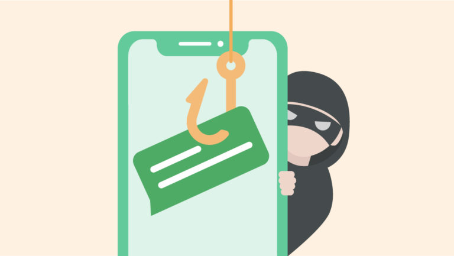

A trick to make the users give important information or money to the attacker in the form of false information or an attractive deal to make users give important information away
Humans are often the weakest part of the system causing unintentional security failures and breaches
Social engineering is the manipulation of individuals to give out certain information or do certain actions that is useful to the attacker like scams
With all that being said lets look for some examples of scams to look out for
A phone call, SMS or message from a "friend" online saying you’ve won a prize in a lucky draw. To claim the prize, you must share confidential information such as account login credentials or OTPs, or even pay administrative fees or taxes.
Alternatively, you could receive a call to take part in a survey that gives you entry to a lucky draw. You "win" the draw and are asked to share personal and confidential information or asked to pay an admin fee to claim the prize.
1. Unexpected emails claiming you are a winner to the lottery
2. Needing to pay money before you can receive the price
3. Being randomly selected to win a prize for a lottery
Phone calls, unsolicited text messages via SMS, messaging apps or advertisements online offering loan services are most likely a loan scam. The scammers may claim to be licensed money lender to gain your trust. They then instruct victims to transfer money before the loan can be disbursed. The scammers disappear once the money is transferred.
They may ask for personal information, such as NRIC and contact numbers, Singpass details and bank account numbers. The information is then used to harass or threaten you for more payments.
1. Ads that reach you through social media or calls
2. Fake websites to convince of legitimacy
3. Asking to pay the fees first before giving the loan money
Usually through a call, text or email soliciting personal information to claim a prize, secure your online accounts or to help investigate fraudulent transactions.
Fake websites are created to look identical to the official sites of organisations or banks, but with slightly different web addresses. Scammers will trick victims into inputting your personal details in these fake websites, which puts their information and money at risk of being stolen by criminals.
1. Unsolicited phone calls, Be wary of phone calls stating you have won a lucky draw when you have not entered one at all. Real organisations will notify winners via emails and physical letters, in addition to a phone call.
2. Unsolicited emails, Emails threatening account closure, delivery issues and legal issues are likely non-legitimate. Emails offering unbelievable deals like tax rebates, lucky draw prizes, or surprise inheritance are likely also scam emails. Scam emails may have spelling mistakes and grammar mistakes.
3. Not addressed by name Phishing emails often do not address victims by name as it is often sent to a mass number of users at a time.
Spear phishing is when the attacker has information on the target, making it easier for the users to be fooled by the scam.
A phishing email might use the recipient’s full name, job title, telephone number or other details that help to convince the target that the communication is genuine.
A spear phishing email may even target just one specific individual if they are seen to be of sufficient value to the attacker
It is important to be vigilant for this type of scam because it means that you are the one being specifically targeted by it for malicious purposes, There is no easy way to identify them and it is easy to get fooled of it, so remember to consult others before giving important information away
Follow the first lesson which is pravacy online to further avoid and protect from scams good luck!